The Answer: not by default.
A generator that looks accurate can still make bad decisions. Retargeting it toward the decisions it supports fixes this.
- Problem
- Logs are derived from rational actors — the sensible behavior that produced the data is exactly what biases it.
- What?
- Optimizing a policy against a generator trained on logged data can lead to biased decision-making.
- Why?
- Regret depends on the generator's error where the learned policy acts.
- How?
- Train a doubly robust, invariant generator (ADIGen), learn a pilot policy from its rollouts, then retarget the generator toward that policy and relearn.
Key messages
- Video: out of distribution, regret drops from 0.74 to 0.28 at η = 0.002 (conditional vs. retargeted).
- Cells: the retargeted generator recovers the rescue peak of all 3 active compounds with only 10% of high-dose wells.
- Theory: retargeting removes the worst-case density ratio from the regret bound.
1The problem: logs come from rational actors
Counterfactual generators promise decisions from logged experience: train on what a system already records, then plan against it. But nobody logged at random — the driver braked when it was wise, the operator reached for the safe grasp, the clinician dosed the sickest patient. That rationality, not noise, biases the data in the two ways that hurt decisions.
(descriptive image to come; will live at static/img/fig_problem.png)
- Confounding: actions correlate with hidden context. Conditioning on the action learns the logger's habits, not the action's effect — braking "goes with" crashes; in our physics logs, strong pushes come with strong gusts.
- Vanishing coverage: the interesting actions are the rare ones. Evasive steering, aggressive grasps, high doses — what a planner most needs to evaluate is what the logger avoided (as little as \(\eta = 0.002\) of our logs).
Planning turns these flaws into bias: the optimizer takes the argmax over the generator's imagination, so it seeks exactly the thinly-covered region where the generator is confidently optimistic (Figure 4). Global metrics, averaged under the logging distribution, never see it.
2Policy Learning with Retargeted Counterfactual Generation
Counterfactual generators, from physics video to virtual cells, are increasingly used to choose interventions: simulate rollouts under candidate actions, then pick the best. We address three problems with this, one per step.
- Biased logs → doubly robust loss. ADIGen (Automatic, Debiased, Invariant Generation) reweights with a universal Riesz representer learned by Riesz regression, so no density ratio is inverted, even for high-dimensional joint interventions.
- Shifting environments → invariance penalty on learned representations \(S(\bX), T(\bA)\).
- Generator not built for decisions → retargeting. Learn a pilot policy \(\tilde\pi\), retrain the generator at \(\pi_\lambda = \lambda\tilde\pi + (1-\lambda)\pi_b\), and relearn the policy.
Policies are KL-regularized tilts of the logger, \(\pi_\beta \propto \pi_b\, e^{\hat\mu/\beta}\), fit from generator rollouts. In round 1 ADIGen is trained at a fixed intervention law \(\nu_0\). In round 2 it is retrained at \(\nu = \pi_\lambda\), with cross-fitting across data halves.
3Why retargeting helps
Every generator is trained under some intervention law \(\nu\) and then judged under another: the policy \(\hat\pi\) that finally acts. The exchange rate between the two is the transfer factor \(\rho(\hat\pi\,\|\,\nu) = \|\hat\pi/\nu\|_\infty\) — how much error accumulated under \(\nu\) can inflate at the actions \(\hat\pi\) actually takes. The theory is three steps on this one quantity.
- Debiasing works (Thm. 1). ADIGen's excess risk has the doubly robust product structure: the weight error and the outcome-model error multiply, so either nuisance can be rough as long as the other is accurate — and no density ratio is ever inverted.
- Regret pays the transfer factor (Thm. 2, Cor. 2.1). \(\Reg \lesssim \tfrac1\beta\, \rho(\hat\pi\,\|\,\nu)\cdot\text{(generator error under }\nu)\). A conditional generator trains at \(\nu = \pi_b\), the logger itself — so it pays the worst-case ratio \(\rho(\hat\pi\,\|\,\pi_b)\), which explodes precisely as overlap \(\eta\) falls.
- Retargeting caps it (Thms. 3–4). Retraining at \(\nu = \pi_\lambda\) bounds the transfer factor at the price of an average (\(\chi^2\)) weight cost — a worst-case quantity traded for a mean. The net gain grows like \(\sqrt\rho\) as overlap falls, and the \(\lambda\)-mixture is within 2× of the best possible target law.
4Cell Painting (RxRx19a)
Outcomes are microscopy images of SARS-CoV-2-infected cells. The intervention is compound × dose (256 arms), and the utility is a rescue score from 0 (infected) to 1 (mock). We bias the logs by keeping only a fraction \(\eta\) of VERO wells at doses ≥ 1 µM, which is exactly where rescue happens.
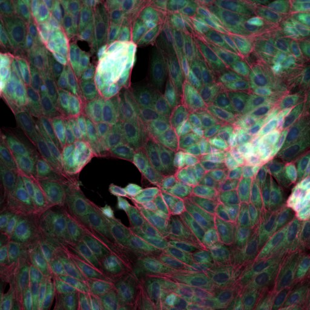
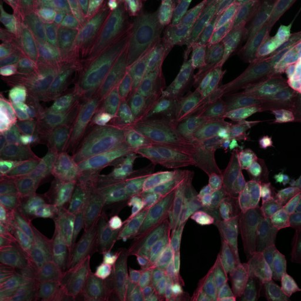
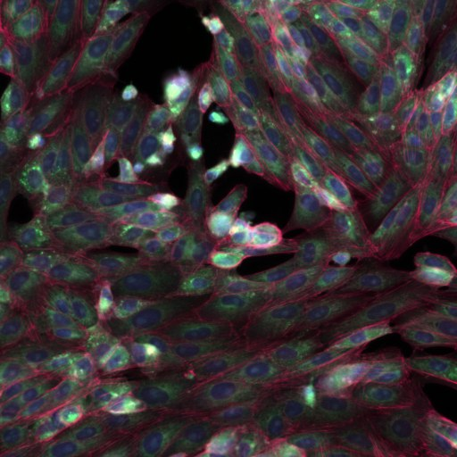
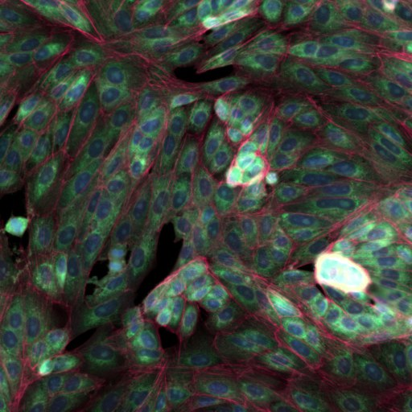
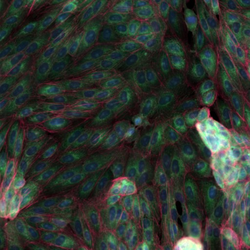
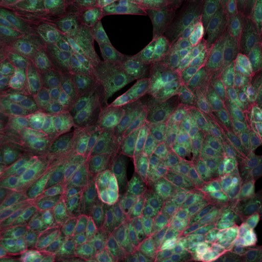
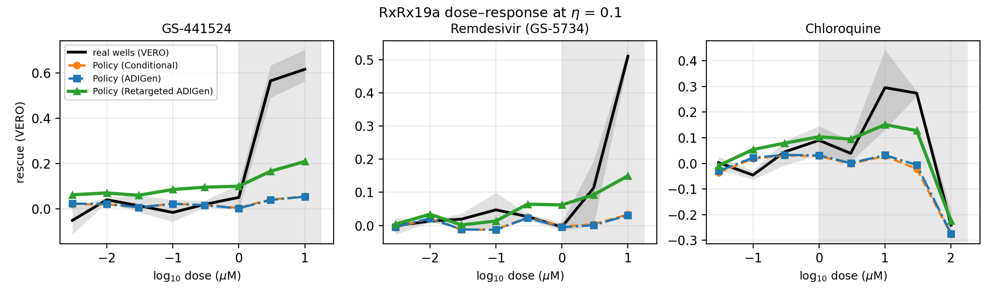
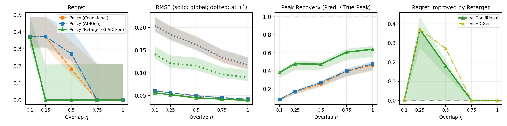
5Video generation (PhyWorld)
Outcomes are rendered videos from PhyWorld, and the generator is a flow-matching DiT in VAE latent space. Each ball gets a push and a shared gust; the policy chooses a second push to land each ball on a goal. Strong gusts (\(|g| \in [0.50, 0.85]\)) lie outside the training range (\(|g| \le 0.25\)) and appear in the logs with probability \(\eta\).
5.1 Out-of-distribution decisions
Each scene has a gust stronger than any in training, seen in only 0.2% of logged scenes (\(\eta = 0.002\)). Top row: what each generator imagines for the push it chose. Bottom row: that push in the real simulator. The black line is the goal.
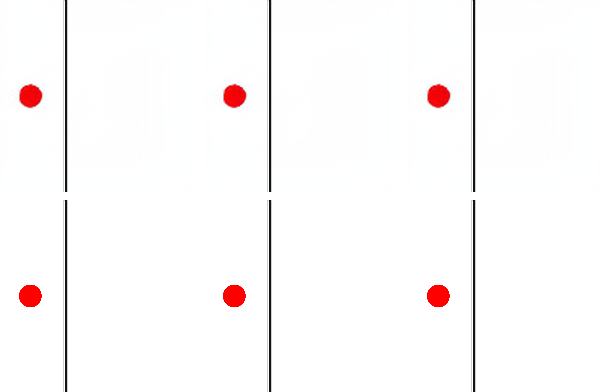
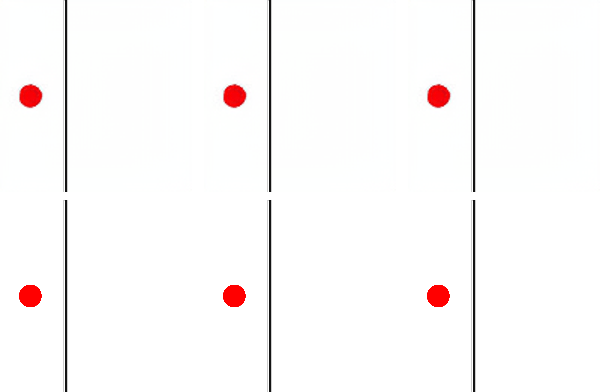
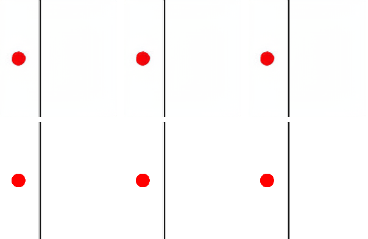
5.2 Results across overlap and dimension
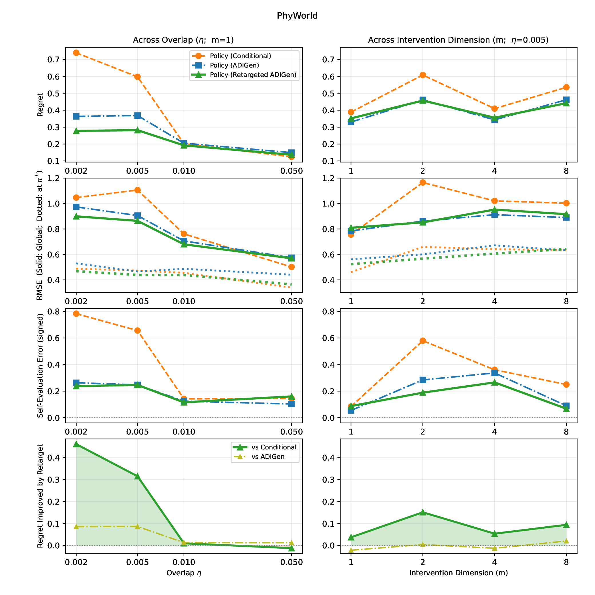
BibTeX
@misc{kim2026goodgenerators,
title = {Are Good Generators Good Decision-Makers? Policy Learning for
General Interventions via Retargeted Counterfactual Generation},
author = {Kim, Raphael C. and Zhu, Jingsen and Zabih, Ramin and
Santacatterina, Michele},
year = {2026},
eprint = {2606.07399},
archivePrefix = {arXiv},
primaryClass = {stat.ML},
doi = {10.48550/arXiv.2606.07399}
}